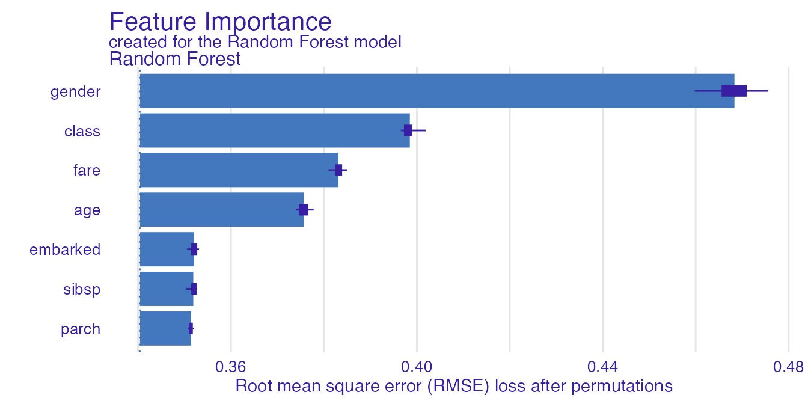
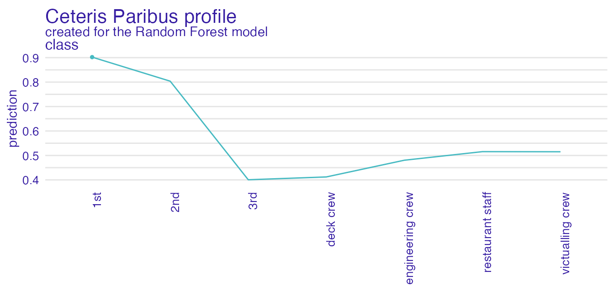
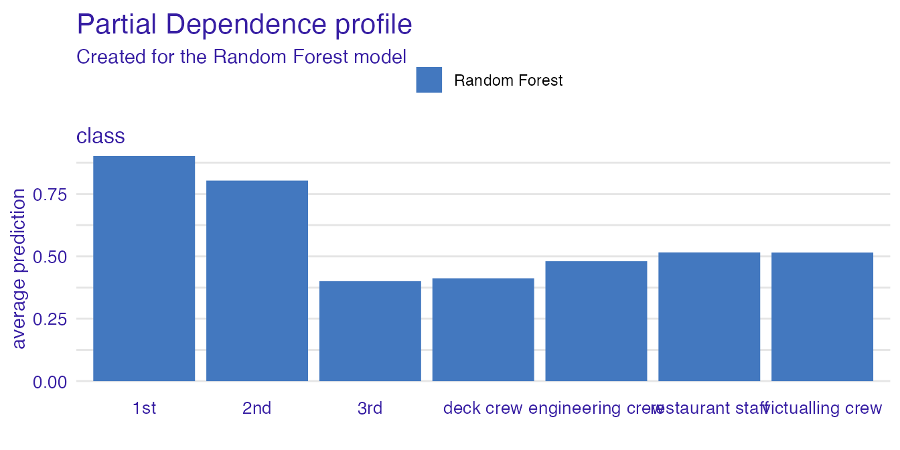

Explanations in natural language
Adam Izdebski
2023-01-13
Source:vignettes/vignette_describe.Rmd
vignette_describe.RmdIntroduction
We adress the problem of insuficient interpretability of explanations
for domain experts. We solve this issue by introducing
describe() function, which automaticly generates natural
language descriptions of explanations generated with
ingredients package.
ingredients Package
The ingredients package allows for generating prediction
validation and predition perturbation explanations. They allow for both
global and local model explanation.
Generic function decribe() generates a natural language
description for explanations generated with
feature_importance(), ceteris_paribus()
functions.
To show generating automatic descriptions we first load the data set
and build a random forest model classifying, which of the passangers
survived sinking of the titanic. Then, using DALEX package,
we generate an explainer of the model. Lastly we select a random
passanger, which prediction’s should be explained.
library("DALEX")
library("ingredients")
library("ranger")
model_titanic_rf <- ranger(survived ~ ., data = titanic_imputed, probability = TRUE)
explain_titanic_rf <- explain(model_titanic_rf,
data = titanic_imputed[,-8],
y = titanic_imputed[,8],
label = "Random Forest")#> Preparation of a new explainer is initiated
#> -> model label : Random Forest
#> -> data : 2207 rows 7 cols
#> -> target variable : 2207 values
#> -> predict function : yhat.ranger will be used ( default )
#> -> predicted values : No value for predict function target column. ( default )
#> -> model_info : package ranger , ver. 0.14.1 , task classification ( default )
#> -> predicted values : numerical, min = 0.01543608 , mean = 0.3218449 , max = 0.9915602
#> -> residual function : difference between y and yhat ( default )
#> -> residuals : numerical, min = -0.7880202 , mean = 0.0003118812 , max = 0.888231
#> A new explainer has been created!#> gender age class embarked fare sibsp parch
#> 706 female 40 3rd Southampton 25.0904 0 4Now we are ready for generating various explantions and then
describing it with describe() function.
Feature Importance
Feature importance explanation shows the importance of all the model’s variables. As it is a global explanation technique, no passanger need to be specified.
importance_rf <- feature_importance(explain_titanic_rf)
plot(importance_rf)
Function describe() easily describes which variables are
the most important. Argument nonsignificance_treshold as
always sets the level above which variables become significant. For
higher treshold, less variables will be described as significant.
describe(importance_rf)#> The number of important variables for Random Forest's prediction is 4 out of 7.
#> Variables gender, class, fare have the highest importantance.Ceteris Paribus Profiles
Ceteris Paribus profiles shows how the model’s input changes with the change of a specified variable.
perturbed_variable <- "class"
cp_rf <- ceteris_paribus(explain_titanic_rf,
passanger,
variables = perturbed_variable)
plot(cp_rf, variable_type = "categorical")
For a user with no experience, interpreting the above plot may be not straightforward. Thus we generate a natural language description in order to make it easier.
describe(cp_rf)#> For the selected instance, prediction estimated by Random Forest is equal to 0.131.
#>
#> Model's prediction would increase substantially if the value of class variable would change to "1st", "2nd", "victualling crew", "restaurant staff".
#> The largest change would be marked if class variable would change to "1st".
#>
#> Other variables are with less importance and they do not change prediction by more than 0.1%.Natural lannguage descriptions should be flexible in order to provide the desired level of complexity and specificity. Thus various parameters can modify the description being generated.
describe(cp_rf,
display_numbers = TRUE,
label = "the probability that the passanger will survive")#> Random Forest predicts that for the selected instance, the probability that the passanger will survive is equal to 0.131
#>
#> The most important change in Random Forest's prediction would occur for class = "1st". It increases the prediction by 0.665.
#> The second most important change in the prediction would occur for class = "2nd". It increases the prediction by 0.625.
#> The third most important change in the prediction would occur for class = "victualling crew". It increases the prediction by 0.114.
#>
#> Other variable values are with less importance. They do not change the the probability that the passanger will survive by more than 0.111.Please note, that describe() can handle only one
variable at a time, so it is recommended to specify, which variables
should be described.
describe(cp_rf,
display_numbers = TRUE,
label = "the probability that the passanger will survive",
variables = perturbed_variable)#> Random Forest predicts that for the selected instance, the probability that the passanger will survive is equal to 0.131
#>
#> The most important change in Random Forest's prediction would occur for class = "1st". It increases the prediction by 0.665.
#> The second most important change in the prediction would occur for class = "2nd". It increases the prediction by 0.625.
#> The third most important change in the prediction would occur for class = "victualling crew". It increases the prediction by 0.114.
#>
#> Other variable values are with less importance. They do not change the the probability that the passanger will survive by more than 0.111.Continuous variables are described as well.
perturbed_variable_continuous <- "age"
cp_rf <- ceteris_paribus(explain_titanic_rf,
passanger)
plot(cp_rf, variables = perturbed_variable_continuous)
describe(cp_rf, variables = perturbed_variable_continuous)#> Random Forest predicts that for the selected instance, prediction is equal to 0.131
#>
#> The highest prediction occurs for (age = 0.1666666667), while the lowest for (age = 41).
#> Breakpoint is identified at (age = 4).
#>
#> Average model responses are *higher* for variable values *lower* than breakpoint (= 4).Ceteris Paribus profiles are described only for a single observation. If we want to access the influence of more than one observation, we need to describe dependence profiles.
Partial Dependence Profiles
pdp <- aggregate_profiles(cp_rf, type = "partial")
plot(pdp, variables = "fare")
describe(pdp, variables = "fare")#> Random Forest's mean prediction is equal to 0.131.
#>
#> The highest prediction occurs for (fare = 0), while the lowest for (fare = 25.167928).
#> Breakpoints are identified at (fare = 27.075 and fare = 21).
#>
#> Average model responses are *lower* for variable values *higher* than breakpoint (= 21).
pdp <- aggregate_profiles(cp_rf, type = "partial", variable_type = "categorical")
plot(pdp, variables = perturbed_variable)
describe(pdp, variables = perturbed_variable)#> Random Forest's mean prediction is equal to 0.131.
#>
#> Model's prediction would increase substantially if the value of class variable would change to "1st", "2nd", "victualling crew".
#> The largest change would be marked if class variable would change to "engineering crew".
#>
#> Other variables are with less importance and they do not change prediction by more than 0.1%.